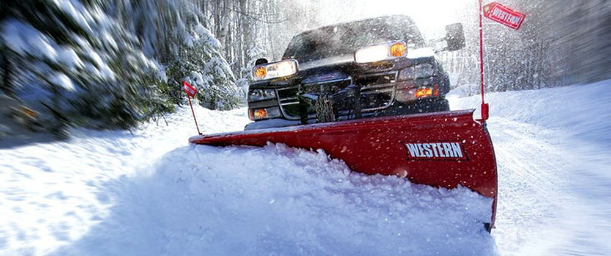

Our Services
Product and Services

With the winter upon us, the need for snow removal is vital for the ability to leave
your home. Northeast winters are always heavy snow fall with blizzard like conditions presenting property damage
and safety risks. We offer around the clock removal to suit your travel needs. Do you have a steep driveway? Do
you have a sidewalk? Do you have a walkway? We also specalize in commercial applications from small to large
businesses. If you answered yes, give us a call today.
Consultation
We offer free consultations to determine your properties size and the most efficient
soultion to your snow buildup. With the cold season upon us while plowing, we also salt and sand to prevent ice
buildup and for the safety of your employees or family members.
Who we service
1. We are currently located in northern New Jersey and service the tri-state area for
applications. For residential applications we only servive within a 35 mile radius from the George Washington
Bridge. We also hold 3 contract with NJS to clear sideroads.
Our Address
2. We offer 4 contracts to fit your needs, per event, per pass, seasonal or complete
service.
3. We offer very competitive pricing and do not require a minimum snowfall and will clean
based on your contract.
Snow Removal Services
- Snow Plowing
- Snow Removal
- Snow Blowing
- Snow Shoveling
- Bobcat Service
- Ice Removal
- Ice Melting
- Snow Hauling
Pricing
Commercial pricing starting at $999. Residential starting at $399.
Contact us today
We are open Monday to Saturaday from 9pm to 5pm. Call us today to schedule your free
consultation by filling out our contact form or calling (917) 673-1267 to speak with a specialist.
Download Consult Forum Here
Contact us by email Here today.